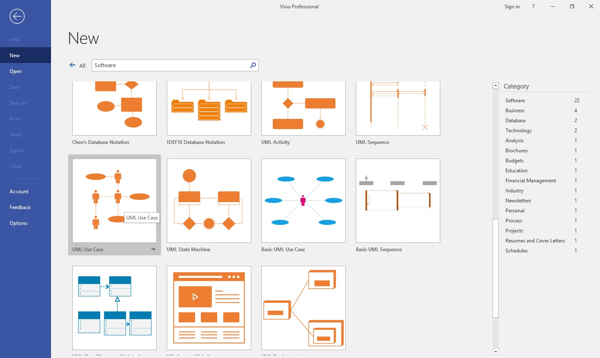

Анализ предметной области и проектирование
Анализ предметной области и проектирование являются первыми этапами в жизненном цикле создания программного решения. Одним из результатов этого этапа является диаграмма вариантов использования (Use Case), описывающая основные группы пользователей системы и варианты ее использования.
Предметная область — это часть реального мира, данные и особенности которой будут отражены в разрабатываемом программном решении. Например, в качестве предметной области можно выбрать бухгалтерию какого-либо предприятия, отдел кадров, банк, магазин и т. д. Предметная область бесконечна и содержит как важные понятия и данные, так и малозначащие или вообще ничего не значащие данные. Так, если в качестве предметной области выбрать учет товаров на складе, то понятия «накладная» и «счет-фактура» являются важными, а то, что сотрудница, принимающая накладные, имеет двоих детей — это для учета товаров неважно. Однако с точки зрения отдела кадров данные о наличии детей являются важными. Таким образом, значимость данных зависит от выбора предметной области.
В рамках курса для демонстрации основных модулей была выбрана система бронирования для проката автомобилей. Давайте проанализируем вводное описание и определим данные, которые действительно необходимы для нашей системы. Перед вами описание предметной области (важные данные мы будем отмечать маркерами: красным — роль пользователя, желтым — важные действия, которые могут совершать пользователи)

Итак, мы выделили:
- Менеджер — проверка данных, документов и подтверждение регистрации клиента
- Менеджер — редактирование списка автомобилей
- Клиент и менеджер — просмотр списка автомобилей
- Клиент — регистрация в системе
- Клиент — загрузка документов
- Клиент — бронирования автомобиля, которое включает в себя выбор автомобиля, даты и времени получения
- Клиент — получение кода
Ревью возможностей MS Visio для создания диаграмм
После определения требований переходим к этапу проектирования. В ходе проектирования архитектором создается проектная документация, включающая:
- текстовые описания
- диаграммы
- модели будущей программы
Для этого используется графический язык для визуализации, описания параметров, конструирования и документирования различных систем UML. Для визуализации модели существуют различные типы диаграмм:
- Диаграмма вариантов использования (use case diagram)
- Диаграмма классов (class diagram)
- Диаграмма состояний (statechart diagram)
- Диаграмма последовательности (sequence diagram)

Остановимся на диаграмме вариантов использования. Она достаточно проста, это позволяет использовать ее для согласования технического задания с заказчиком
Создание диаграммы для гостиничного комплекса
1. Определение рамок системы согласно заданию
Для этого используем элемент subsystem, там будут располагаться прецеденты (функционал, реализуемый системой)

2. Определение основных групп пользователей (ролей) и размещение на диаграмме
Это те, кто будет использовать систему, и в нашем случае, как следует из тех. задания, — это клиент и менеджер. После размещения будет наглядно видно, что разные группы пользователей имеют доступ только к определённому функционалу

3. Определение вариантов использования (прецедентов), размещение их на диаграмме

А) Для менеджера:
- проверить данные и документы клиента
- подтвердить регистрацию клиента
- редактировать список автомобилей
- просмотреть список бронирований
Б) Для клиента:
- зарегистрироваться в системе
- загрузить документы
- выбрать автомобиль
- выбрать дату и время получения автомобиля
- забронировать автомобиль
- получить код
В) Для клиента и менеджера:
- просмотреть список автомобилей
Горячие клавиши (Hot Keys) для переключения инструментов
- Ctrl + 1 — выделить элемент
- Ctrl + 2 — добавить комментарий
- Ctrl + 3 — добавить связь между актером и прецедентом
Разграничение прецедентов между актерами и размещение отношений
Отношение ассоциации — отражает возможность использования актером прецедента

Отношение включения — поведение одного прецедента включается в другой в качестве составного, причем дополняемый вариант использования не сможет выполняться без основного

Отношение расширения — отражает возможное присоединение одного использования к другому, при этом расширяющий вариант использования выполняется лишь при определенных условиях и не является обязательным для выполнения основного прецедента

Формат сохранения диаграммы
На этом проектирование диаграммы завершено, и мы можем перейти к ее сохранению. Созданная диаграмма по умолчанию хранится в формате .vsdx, но для гарантированного запуска файла на других устройствах рекомендуется сохранять диаграмму еще и в .pdf формате
Вывод
Мы проанализировали вводную часть задания, изучили предметную область, познакомились с основными типами диаграмм и самостоятельно создали диаграмму вариантов использования. Это уже сейчас позволит вам достаточно подробно проработать техническое задание, чтобы оценить сроки и стоимость его выполнения, описать конкретные случаи взаимодействия пользователей с системой, которые лягут в основу тестов и документации, и согласовать все это с заказчиком.